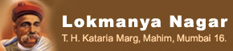

|  |
|
|

|
Bhagini Mandal Affectionately called as "LOBHA" mandal, this exclusive "women's institution" was formed on 25th October, 1952. The idea of forming such an institution was to allow women, both young and old in the society, to interact, organise themselves, promote valuable social and cultural activities for themselves. The idea was such an instantaneous hit amongst the women in the society that the Bhagini Mandal was considered by most of them as their "second home". Especially, for a newly wed daughter-in-law entering the society, it was an excellent platform to get to know others, make new friends and participate in the various activities offered by the Bhagini Mandal. The Bhagini Mandal celebrated its silver jubilee year in 1977 amidst great joy and splendour. A souvenir magazine was also published and released at that time to commemorate the happening of such a wonderful event in the society. Also, the then famous play "Thank You Mister Glad" was enacted by the professional institute called "Natya Sampada". The Bhagini Mandal celebrated its golden jubilee anniversary in the year 2001-2002 and a special attraction at this event was the tremendous involvement of the "Mahervashinis" of the society along with the existing women members. At this time also, a souvenir was published and released to commemorate the special occasion. On this occasion, the chief guest was Dr. Vijaya Wad, the famous writer and social activist. As a part of the golden jubilee celebrations, throughout the year, the Bhagini Mandal organised various programmes and invited eminent speakers and successful people in various fields of life. Over the years, the Bhagini Mandal has also been instrumental in starting and successfully running the Udyog Mandir. It would be prudent to say that both the above Mandals have not only achieved tremendous success in their own perspectives over the years, but as a symbol of mutual co-operation and encouragement, they have time and again been supportive of each other and have ensured that so many events and programmes have taken place under their auspices. |
| ©Copyright 2012 Lokmanya Nagar C.H.S Ltd., All rights reserved. Site optimised for 1280x720 resolution and above. |